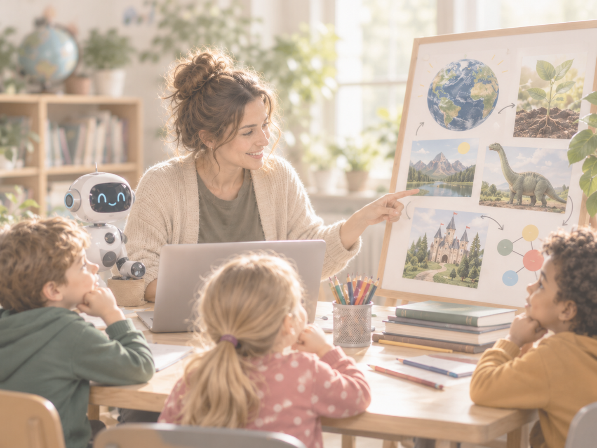
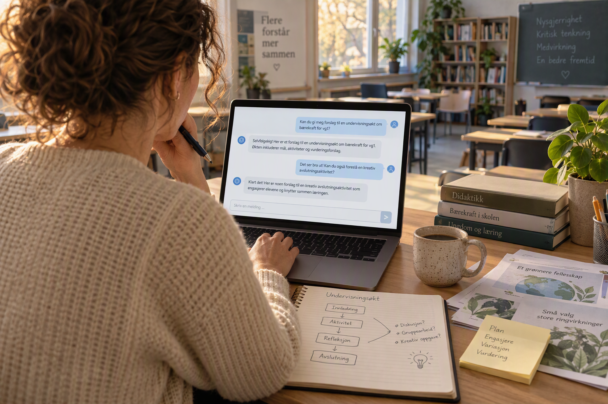
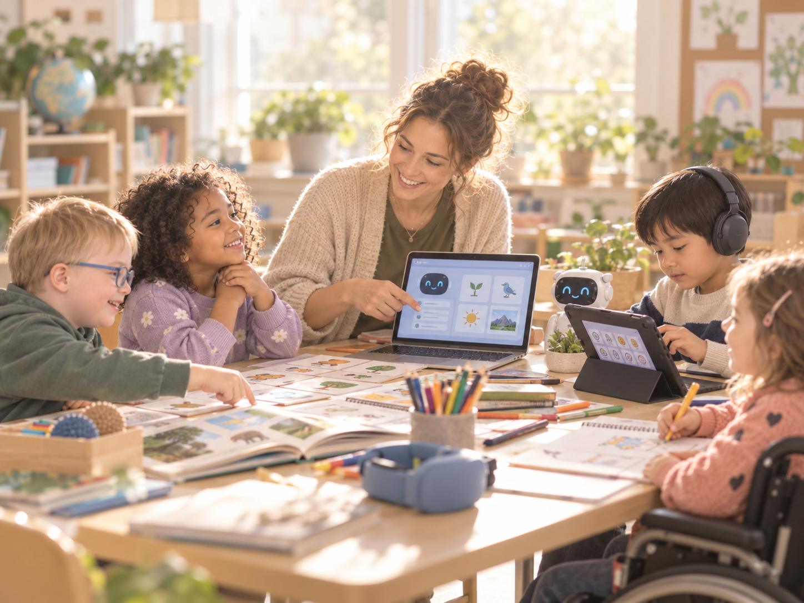
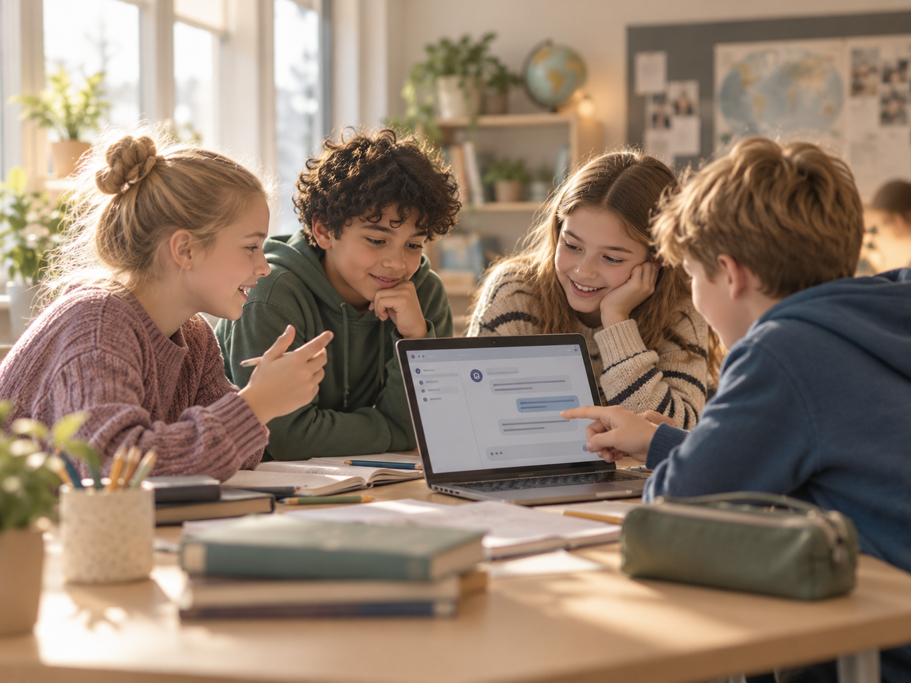
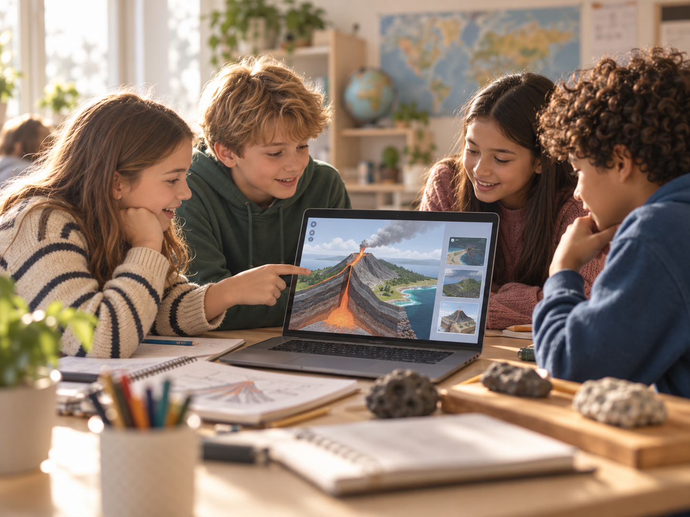

KI i pedagogisk praksis
To perspektiver på KI: Lærerens profesjonelle arbeid, og KI som ressurs i elevenes læringsarbeid. Åtte pedagogiske funksjoner.
Velg skoleslag
Velg kontekst. Eksemplene under hver kategori blir tilpasset.
KI som støtte i profesjonsarbeidet

Pedagogisk iscenesetting
Å åpne fagstoff og planlegge betingelser for læring.
Les mer →
Profesjonsfaglig dveling
Å undersøke vurderinger, forståelser og valg.
Les mer →
Inkluderende fellesskap
Å utvikle tilgjengelige læringsmiljøer.
Les mer →
Administrativ støtte
Å støtte praktisk og organisatorisk arbeid.
Les mer →KI som pedagogisk ressurs
På barnetrinnet er eksemplene i hovedsak lærerstyrte eller forberedt av læreren. Elevene gis i all hovedsak ikke egen tilgang til generativ KI.

Interaksjon
Å undersøke ideer gjennom dialog.
Les mer →Kommunikasjon
Å utvikle og formidle uttrykk.
Les mer →
Visualisering
Å gjøre faglige sammenhenger synlige.
Les mer →Simulering
Å utforske mulige forløp og konsekvenser.
Les mer →Nasjonale føringer og lokal bruk
KI-bruk må følge anbefalingene for skoletrinnet og være innenfor godkjente løsninger, personvernkrav og lokale rammer.
Se rammer, KI-forordningen og kilder →